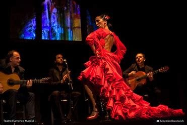
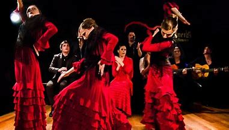
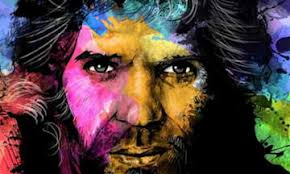
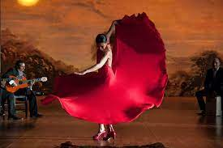

Historia del Flamenco

El flamenco es una expresión artística que nace de la mezcla
de muchas culturas:
la árabe, la judía, la de los gitanos (que llegaron a
España en el siglo XV y muchos
se quedaron en Andalucía), y con la cultura andaluza.
De esa mezcolanza cultural en Andalucía surgió el Flamenco.
En Andalucia

El origen del flamenco en Andalucía no está del todo claro,
pero sí el idilio que este arte mantiene con esta tierra,un
idilio que viene de lejos
Hay quienes indican que el flamenco proviene de los cantos
monocordes islámicos
mientras que otros atribuyen a los gitanos la introducción de
este género en tierras andaluzas.
Camaron de La Isla

Camarón de la Isla es un nombre imprescindible para comprender
el cante jondo
(manifestacion original de la expresion Flamenca) de la segunda mitad del siglo XX.
Se le considera uno de los mejores cantaores de flamenco de todos los tiempos y,
en opinión de muchos, un revolucionario del cante que contribuyó,
junto a Enrique Morente,
al renacer de un género que atravesaba una grave crisis,
transformándolo desde dentro,
aunque respetando sus esencias
más genuinas
El Baile Flamenco

El Flamenco es un arte que expresa sentimientos profundos
Nace como una expresión de los grupos marginados
Estos grupos usaron este arte para expresar sus vivencias emocionales
El dolor, la soledad, la angustia, la desesperación,
el amor, el desamor, la pasión y la alegría son temas centrales
en el flamenco